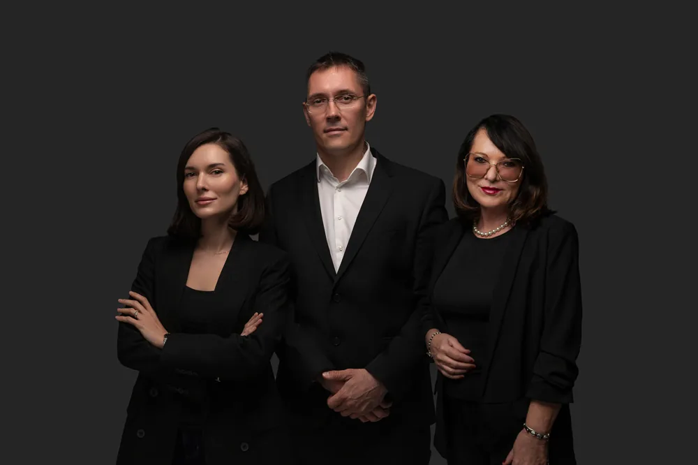

“
Un profesionist desăvârșit. A preluat dosarul de la alt avocat care nu-mi dădea șanse reale, fiind un accident fără contact. A fost prompt și comunicativ, iar rezultatul a fost peste așteptările mele. Este cel mai bun!
L
Lumi
Recenzie Google
Recuperăm daunele morale și materiale cuvenite celor răniți în accidente auto — cu rigoare, profesionalism și peste 20 de ani de experiență.
Cabinet de avocatură din București, sub egida Baroului București, dedicat exclusiv victimelor accidentelor rutiere și familiilor acestora.
Spre deosebire de cabinetele de avocați generaliste, ne ocupăm exclusiv de victimele accidentelor rutiere și de muncă. Cunoaștem în detaliu procedura penală, expertiza medico-legală și modul de evaluare a daunelor — de la numărul de zile de îngrijiri medicale până la cuantumul daunelor morale. Această concentrare înseamnă dosare mai bine construite și despăgubiri pe măsura suferinței reale.
Consultanță gratuită →
Acoperim întreaga gamă de pretenții ce decurg dintr-un accident rutier cu victime.
Stabilirea corectă a numărului de zile de îngrijiri medicale — temelia oricărui dosar de despăgubire.
Detalii 02Repararea suferinței fizice și psihice, evaluată în raport cu gravitatea vătămării.
Detalii 03Costuri medicale, venituri nerealizate și celelalte pierderi patrimoniale.
Detalii 04Reprezentare dedicată victimelor accidentelor rutiere pentru recuperarea integrală a despăgubirilor cuvenite.
Detalii 05Asistență dedicată pietonilor accidentați, una dintre cele mai frecvente categorii de victime.
Detalii 06Reprezentarea familiilor în obținerea daunelor morale pentru pierderea unei persoane dragi.
Detalii 07Asistență și reprezentare în latura penală și civilă a dosarului.
Detalii 08Negociem și acționăm asigurătorul RCA pentru despăgubirea integrală.
Detalii 09Vă ghidăm prin obținerea și interpretarea corectă a certificatului medico-legal.
DetaliiIndiferent de rolul avut în accident, dacă ați fost rănit sau ați pierdut o persoană dragă, vă pot reveni despăgubiri.
Șoferul rănit într-un accident, indiferent de gradul de vinovăție.
Persoana transportată, rănită în urma unui accident rutier.
Cei mai vulnerabili participanți la trafic, accidentați de un autovehicul.
Rudele apropiate ale victimei decedate, pentru daunele morale cuvenite.
Un parcurs clar, în care vă reprezentăm la fiecare etapă procesuală.
Analizăm circumstanțele accidentului și documentele medicale, fără niciun cost.
Strângem probele, certificatul medico-legal și evaluăm corect prejudiciul.
Vă reprezentăm în fața asigurătorului, a organelor penale și a instanței.
Urmărim încasarea efectivă a despăgubirilor cuvenite, până la final.
Peste 20 de ani de practică în Baroul București, dedicat exclusiv victimelor accidentelor auto și recuperării despăgubirilor cuvenite.
Expert în construirea dosarelor de despăgubire după accidente auto și în relația cu organele de cercetare penală și instanțele de judecată.
Asistență și reprezentare a victimelor accidentelor auto în dosarele de daune morale și materiale, cu atenție la fiecare detaliu al cazului.
Aflați în câteva minute dacă aveți dreptul la despăgubiri și ce sume puteți obține — fără nicio obligație și indiferent unde vă aflați în țară.
Prima consultație este gratuită și fără obligații. Vă răspundem prompt.
Scanați codul cu telefonul pentru a apela direct — sau, de pe desktop, alegeți o variantă mai comodă: